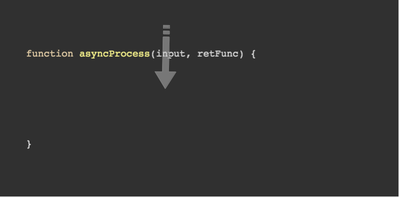
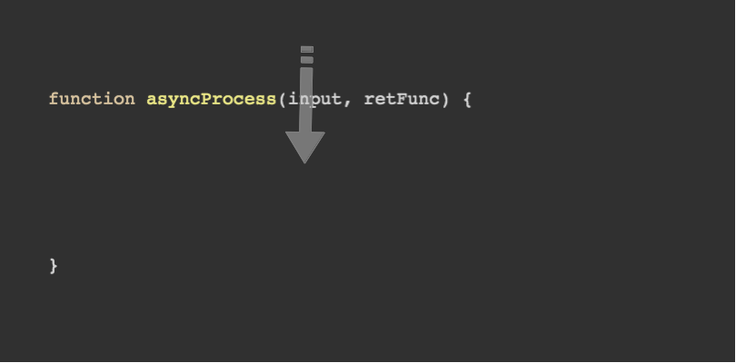
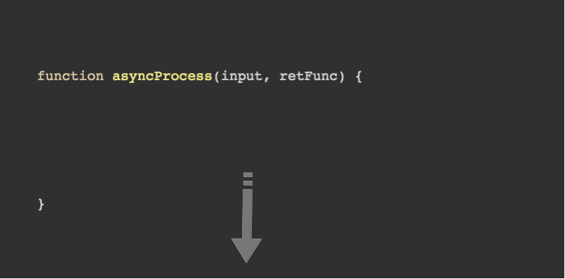
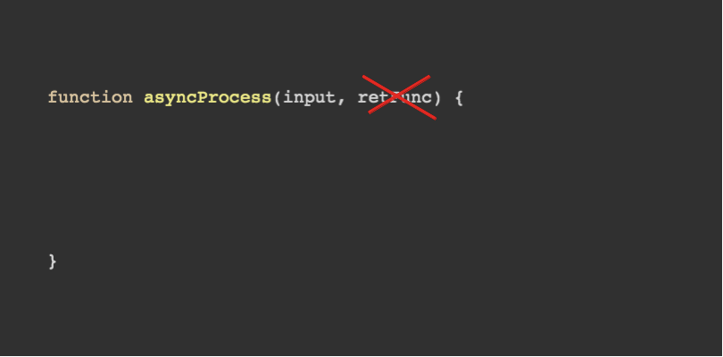
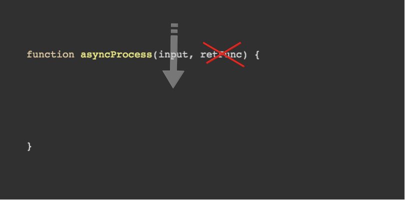
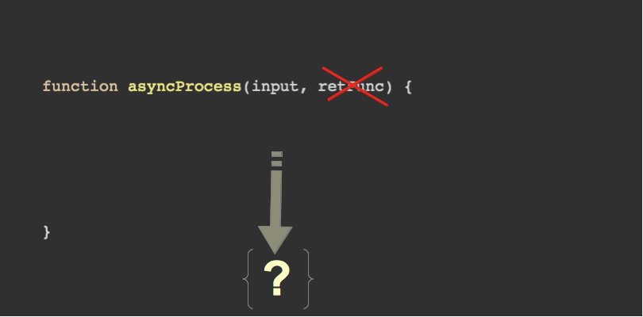
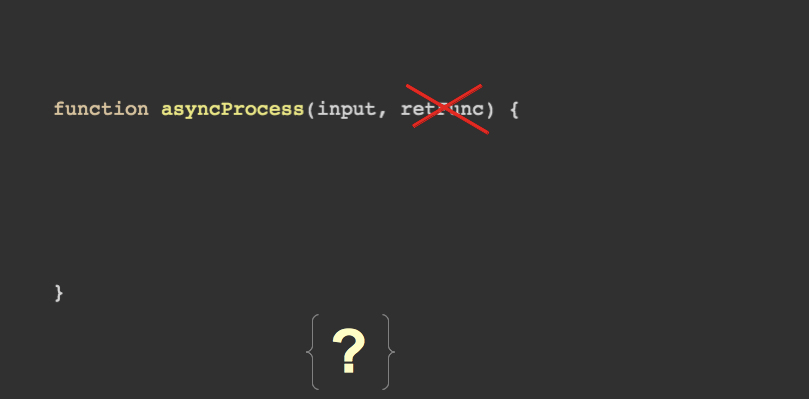
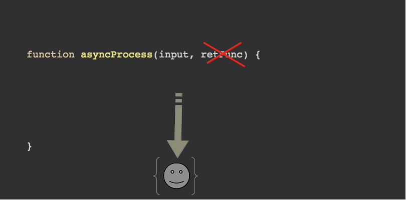
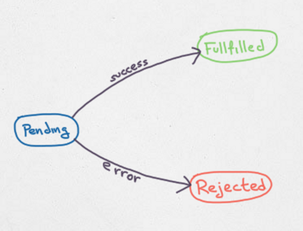
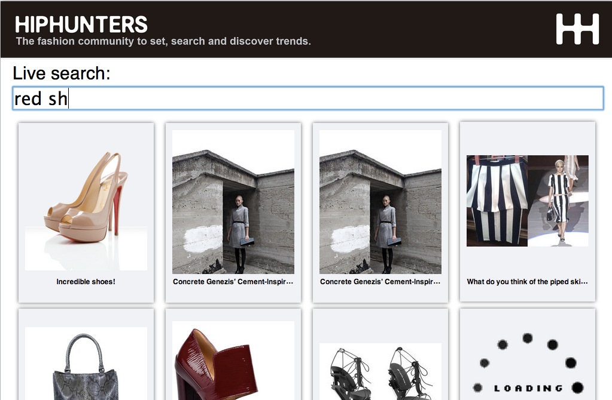

Taming Asynchronous Programming
(Beyond Promises)
Enrique Amodeo
(who is this guy?)
![[Enrique Amodeo, circa 2010]](img/EnriqueAmodeo.jpg)
- Working as a professional since 2000
- Worked with JAVA/JEE and big companies
- Has loved JS since 2005
- Test infected
- Enthusiast of the Agile/Lean way
- Now Freelancing
- Follow me at @eamodeorubio
This talk
- Callback hell
- Promises will save us...
- Things you cannot promise
- Functional Programming
- (Node) Event Streams
- (Functional) Reactive Programming
- When to use what
Callback Style
(I mean CPS)
Continuation Passing Style
 


Problem 1: Composing async processes
(synchronous code)
// We are used to this:
function loadUserPic(userId) {
var user = findUserById(userId);
return loadPic(user.picId);
}
ui.show(loadUserPic('kike'));
Problem 1: Composing async processes
(CPS)
// Both findUserById & loadUserPic are async processes
function loadUserPic(userId, ret) {
findUserById(userId, function(user) {
loadPic(user.picId, ret);
});
}
loadUserPic('kike', function(pic) {
ui.show(pic);
});
The Pyramid of DOOM
Problem 1: Composing async processes
(CPS, slightly better?)
var loadUserPic = function() {
var callback;
function loadPicForUser(user) {
loadPic(user.picId, callback);
}
return function loadUserPic(userId, ret) {
callback = ret;
findUserById(userId, loadPicForUser);
}
}();
loadUserPic('kike', ui.show.bind(ui));
A lot of boilerplate
Problem 2: Error handling
(Old way)
function loadUserPic(userId) {
var result = findUserById(userId);
if(result.error)
return result;
return loadPic(result.picId);
}
var result = loadUserPic('kike')
if(result.error)
return ui.error(result.error);
ui.show(result);
Problem 2: Error handling
(CPS equivalent)
function loadUserPic(userId, ret) {
findUserById(userId, function(err, user) {
if(err)
return ret(err);
loadPic(user.picId, ret);
});
}
loadUserPic('kike', function(err, pic) {
if(err)
return ui.error(err);
ui.show(pic);
});
The Node Way :/
Problem 2: Error handling
(Exceptions)
function loadUserPic(userId) {
var user = findUserById(userId);
return loadPic(user.picId);
}
try {
ui.show(loadUserPic('kike'));
} catch(err) {
ui.error(err);
}
Problem 2: Error handling
(CPS)
function loadUserPic(userId, ret, thr) {
findUserById(userId, function(user) {
loadPic(user.picId, ret, thr);
}, thr);
}
loadUserPic('kike', ui.show.bind(ui), ui.error.bind(ui));
Much better
CPS
(as is)
It is easy to learn... but
- Does not scale very well (complexity)
- Composing async functions is the key problem
- NodeJS convention for errors is a boilerplate source
- It is easy to learn
Promises will save us...
(help me!)
What is it?
(a value in the future)





A promise can be fulfilled once
Only can represent one single value
Accessing the value
var promisedPic = loadUserPic('kike');
// Some time later
promisedPic.then(function(pic) {
ui.show(pic);
});
It doesn't matter if it has been fulfilled yet or not
Chaining
(so what?)
findUserById('kike')
.then(function(user) {
return
findPic(user.picId)
.then(function(pic) {
ui.show(pic);
});
});
Chaining
(no such thing as a nested promise)
findUserById('kike')
.then(function(user) {
return findPic(user.picId);
})
.then(function(pic) {
ui.show(pic);
});
No Pyramid of DOOM! We are saved!
Error handling
(catching errors)
findUserById('kike')
.then(function(user) {
return findPic(user.picId);
})
.then(function(pic) {
ui.show(pic);
}, ui.error.bind(ui)); findUserById('kike')
.then(function(user) {
return findPic(user.picId);
})
.then(function(pic) {
ui.show(pic);
})
.fail(ui.error.bind(ui));Error handling
(to throw or not to throw?)
findUserById('kike')
.then(function(user) {
return findPic(user.picId);
})
.fail(function(err) {
if(err.isFatal())
throw err;
return recoverError(err);
})
.then(function(pic) {
ui.show(pic);
});
Ending the chain
(with style)
findUserById('kike')
.then(function(user) {
return findPic(user.picId);
})
.then(function(pic) {
ui.show(pic);
}).done(); // report unhandled errors
findUserById('kike')
.then(function(user) {
return findPic(user.picId);
})
.then(function(pic) {
ui.show(pic);
}).fin(someCleanUp); // Like finally
Some promises out there!
- jQuery Promises (was buggy)
- When.js - Lightweight
- Q - Most complete & mature, Node.js adapters, utils...
- A lot more...
Things you cannot promise
(there are no silver bullets)
Incremental processing
(pagination, asap response...)
Promises are for processing the full response!
Event processing
(UI logic?)
You'd need one promise for each event instance
Temporal logic
(throttle, delay...)
Do it yourself!
Some use cases
(there are more...)
- Complex user gestures
- Live search
- Processing streams of pushed data (SSE, WebSockets...)
- Incremental processing if large data sets as streams
Our test case
(remember the TODO list for MVC?)
Download the code
(experiment and criticize)
- You can explore it here: http://bit.ly/Xt8wo9
- The same functionality
- Four different approaches: FP, EventStreams, FRP & RX
Functional programming
(this is getting serious)
Composing functions
(synchronous, procedural)
function showUserPic(userId) {
var user = findUserById(userId);
var picId = user.picId;
var pic = loadPic(picId);
ui.show(pic);
}
showUserPic('kike');
Composing functions
(synchronous, fuctional)
var showUserPic = compose([
findUserById,
getProperty('picId'),
loadPic,
ui.show.bind(ui)
]);
showUserPic('kike');
Composing functions
(asynchronous, naive)
function showUserPic(userId, ret) {
ui.showProgressIndicator();
findUserById(userId, function(user) {
var picId = user.picId;
loadPic(picId, function(pic) {
ui.show(pic, ret);
});
});
}
showUserPic('kike', function() {
ui.hideProgressIndicator();
});
Note all the intermediate anonymous functions!
Composing functions
(asynchronous, higher order functions)
var showUserPic = composeAsync([
perform(ui.showProgressIndicator.bind(ui)),
findUserById, // Async transformation
mapSync(getProperty('picId')),
loadPic, // Async transformation
perform(ui.show.bind(ui))
]);
showUserPic('kike', ui.hideProgressIndicator.bind(ui));var showUserPic = compose([
findUserById,
getProperty('picId'),
loadPic,
ui.show.bind(ui)
]);Same structure as the sync version!
No need to change paradigm
Automate things!
(only happy path is shown)
function loadUserPic(userId, ret, thr) {
findUserById(userId, function(user) {
loadPic(user.picId, ret, thr);
}, thr);
}
function composeTwo(fn1, fn2) {
return function (data, ret, thr) {
fn1(data, function (result) {
fn2(result, ret, thr);
}, thr);
};
}
var loadUserPic = composeTwo(findUserById, loadPic);
Compose many
(only happy path is shown)
function composeAsync(fns) {
if (fns.length === 1)
return fns[0];
return fns.reduce(composeTwo);
};
Mix sync and async logic
(sync mapping)
var showUserPic = composeAsync([
perform(ui.showProgressIndicator.bind(ui)),
findUserById,
mapSync(getProperty('picId')), //Sync transformation
loadPic,
perform(ui.show.bind(ui))
]);
From sync to async
(only happy path is shown)
function mapSync(syncFn) {
return function(data, ret, thr) {
try {
ret(syncFn(data));
} catch(err) {
if(typeof thr == 'function')
thr(err);
}
};
}
Side effect
(to update UI and server)
var showUserPic = composeAsync([
// Side effect
perform(ui.showProgressIndicator.bind(ui)),
findUserById,
mapSync(getProperty('picId')),
loadPic,
// Side effect
perform(ui.show.bind(ui))
]);
No transformation
No need to wait for response
Warning: we cannot undo a side effect
Side effects
(only happy path is shown)
function perform(dangerousEffect) {
return function(data, ret) {
try {
dangerousEffect(data);
} finally {
if(typeof ret == 'function')
ret(data);
}
};
}
Syntax sugar
(a matter of taste)
// If you liked jQuery or promises chains
var showUserPic =
perform(ui.showProgressIndicator.bind(ui))
.map(findUserById)
.mapSync(getProperty('picId'))
.map(loadPic)
.perform(ui.show.bind(ui));
showUserPic
.perform(ui.hideProgressIndicator.bind(ui))('kike');
Any framework out there?
- Async.JS is interesting
- Asynch.JS control flow is cool
- But map, forEach, etc. cannot do incremental/event processing
Composing with Async
// Reversed order
var showUserPic = async.compose(
loadPic,
// mapSync not in Async
mapSync(getProperty('picId')),
findUserById,
// perform not in Async
perform(ui.showProgressIndicator.bind(ui))
);
showUserPic('kike', function (err, pic) {
// Node convention
if(err)
return ui.showError(err);
ui.show(pic);
});
Almost anything you need
- Transform & Filter
- Temporal logic: Delay, throttle
- Synchronization
- Merging
- Grouping
- Unwrapping streams of streams
- No limit...
Live Search with FP
(a simplified version)
var liveSearch = composeAsync([
mapSync(keyUpEventsToSearchText),
changes(),
limitThroughput(2),
filter(searchTextShorterThan(3))
perform(ui.startSearching.bind(ui)),
mapSync(searchTermToSearch),
perform(function (search) {
search.on('data', ui.appendResult.bind(ui));
}),
perform(function (search) {
search.on('end', ui.endSearching.bind(ui));
})
]);
searchInputText.addEventListener('keyup', liveSearch);
Live Search with FP
(full code)
- I wrote a quick hack with all these tools
- No error treatment
- No tests :-(
- Lightweight: less than 1 KB (min+zip)
- Code here: http://bit.ly/WjOAX7
(Node) Event streams
(IO everywhere)
Node streams
(efficient IO)
// Streams are EventEmitters
dataStream.on('data', function(data) {
// Consume a data chunk
});
dataStream.on('error', function(err) {
// Handle error
});
dataStream.on('end', function() {
// No more data
});
// With a pipe method
dataStream.pipe(compressor('zip')).pipe(res);
Do you want to know more? http://bit.ly/Okzywv
Event Streams
(not only low level IO)
- Domain Events
- Event Sourcing
- Query results
- See Dominic Tarr's project http://bit.ly/mYJuZH
Event Streams
- Readable streams are event sources
- Writable streams are side effects
- Through streams are async transformations
Live search with Event Streams
(simplified version)
var es = require('event-stream'),
domstream = require('domnode-dom');
var searchStream = es.pipeline(
domstream.createReadStream('input.search', 'keyup'),
es.mapSync(trim),
es.mapSync(toLowerCase),
es.mapSync(function(text) {
ui.showProgressIndicator();
return text;
}),
es.map(search),
);
searchStream.on('data', ui.show.bind(ui));
searchStream.on('error', ui.error.bind(ui));
searchStream.on('end', ui.hideProgressIndicator.bind(ui));
Rings a bell?
live search with Event Streams
(full code)
- Needed to write some custom streams (easy)
- NOT lightweight: about 13 KB (min + zip)
- Code here: http://bit.ly/VAEDms
Strong points
- You can use all node streams libs!
- There have adapters for HTML5 APIs
- Easy to extend
- A lot of different streams exists http://bit.ly/YoairH
Weak points
- Node centric
- Node is planning to change Stream interface
- Need to use Browserify or similar
- Need more docs!
(Functional) Reactive Programming
(such a fancy name...)
The best of both worlds
(unify ideas and language)
- Data Source = Streams + FP tools
- First citizen objects
- Coherent set of operations
- Coherent language
- Chainable & Composable (jQuery/promise like)
Two kinds of Data Sources
(data sequences)
- With memory (promise like)
- Remember N last values
- Replays N last values
- Useful for data processing & Event Sourcing
Two kinds of Data Sources
(event streams)
- Without memory
- Useful when we don't care about past info
- UI Logic
Promises VS. FRP
- Property: data sequence than remembers only the last value
- Promise: a property with only one single value/event
- Promises are a subset of FRP
RX
(from the Microsoft guys)
- Very complete
- Bridges with some of the existing tech
- Medium weight (12 KB min+zip)
- LINQ centric, JS is an aside
- Have its own "language"
- Not very well documented
- Apache License & Microsoft Open Technologies
- Some people have doubts about community involvement
Bacon
(it's healthy)
- Very complete
- Made for JS (TM)
- Node & Browser
- More lightweight (5 KB min+zip)
- Not so huge, very focused
- Only bridges with jQuery/Zepto
- Event Streams & Properties
- Have a look http://bit.ly/wdEr9r
Live Search with Bacon.JS
(simplified version)
var searchText = $('input[type="text"][name="search"]')
.asEventStream('keyup')
.map(".target.value")
.map(trimText)
.toProperty(""); // memory !
searchText
.sample(500)
.skipDuplicates()
.filter(shorterThan(3))
.map(searchForSearchTerm)
.onValue(function (search) {
search.on('data', ui.appendResult.bind(ui));
search.on('end', ui.endSearching.bind(ui));
});
Live Search with Bacon.JS
(full code)
- Works out of the box (no need to write any extension)
- About 5 KB (min+zip)
- Code here: http://bit.ly/YJ0koD
When to use what
(we need to learn new things)

When to use CPS
- Symple async logic: at most 2 async transformations.
- I'm paranoid about performance
- No time to learn anything more complex
- Often in small code bases or POCs
When to use Promises
- My async processes return a single value
- My async processes return a small collection
- But you need 1 or 2 work days to learn it
When to use FP
- In use cases promises don't help me
- Lightweight approach
- My team is comfortable with FP
- My personal choice
- Large code bases
When to use FRP
- In use cases promises don't help me
- Don't mind using a framework
- My team is not so comfortable with FP, but can live with it
- Large code bases
- Powerful but needs time to master
The End
Some questions?